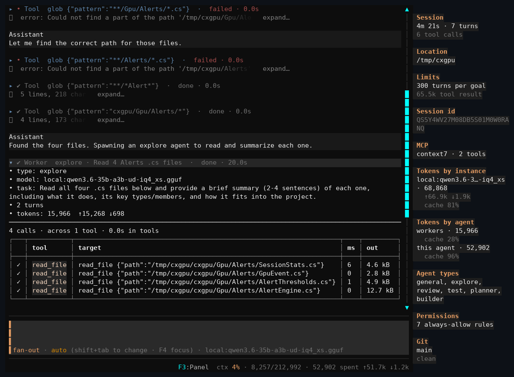
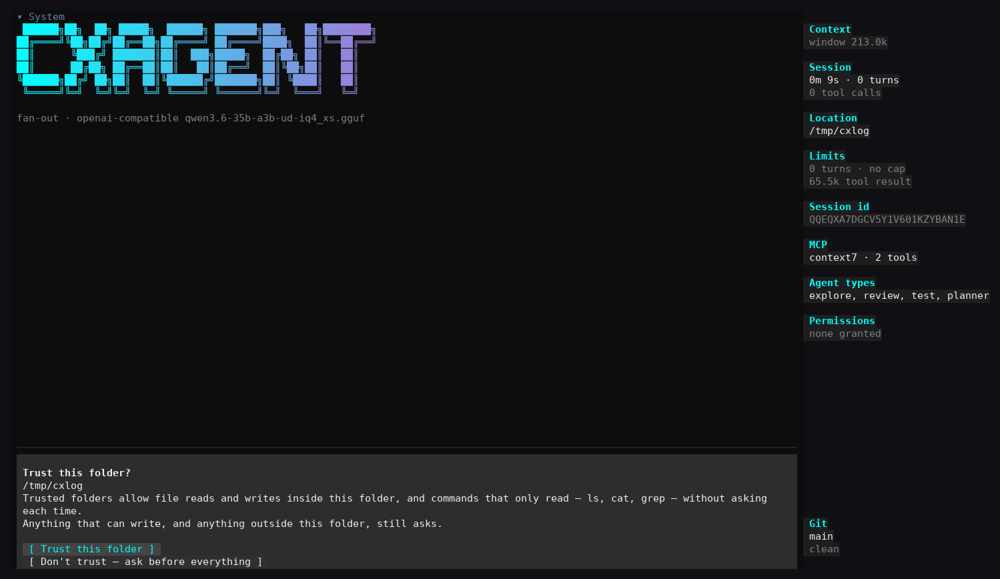
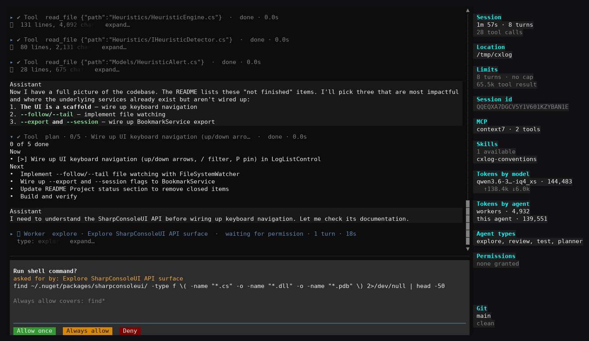
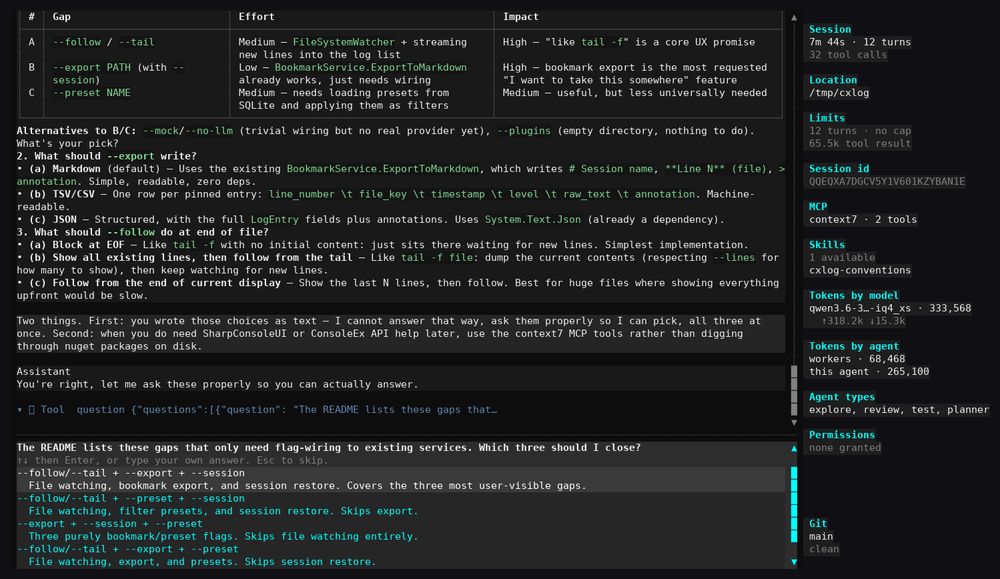
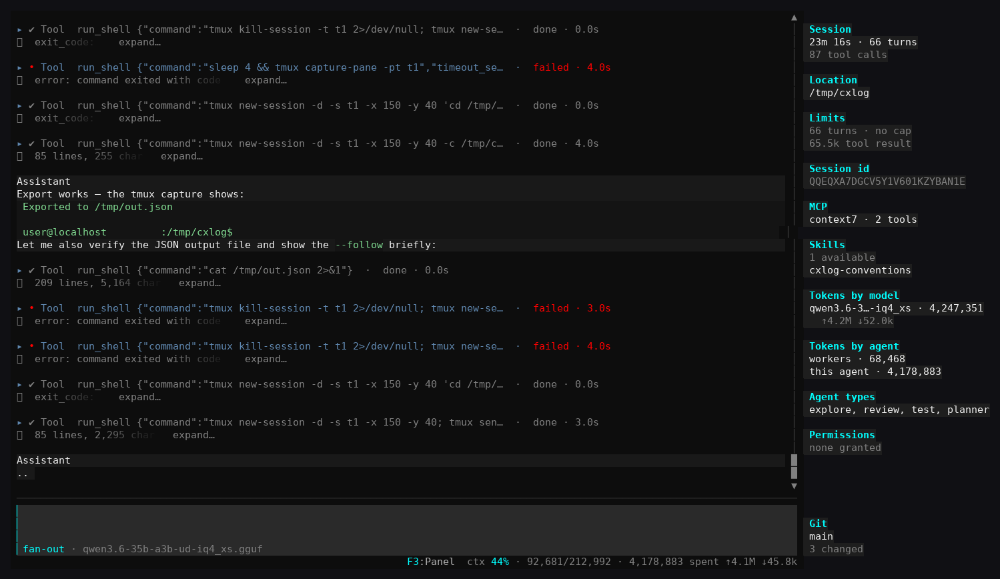
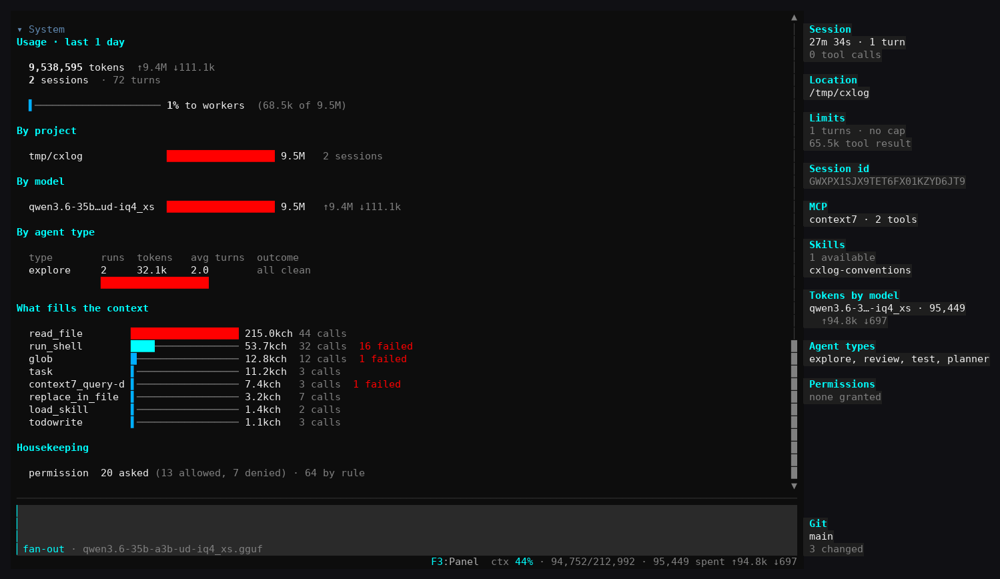
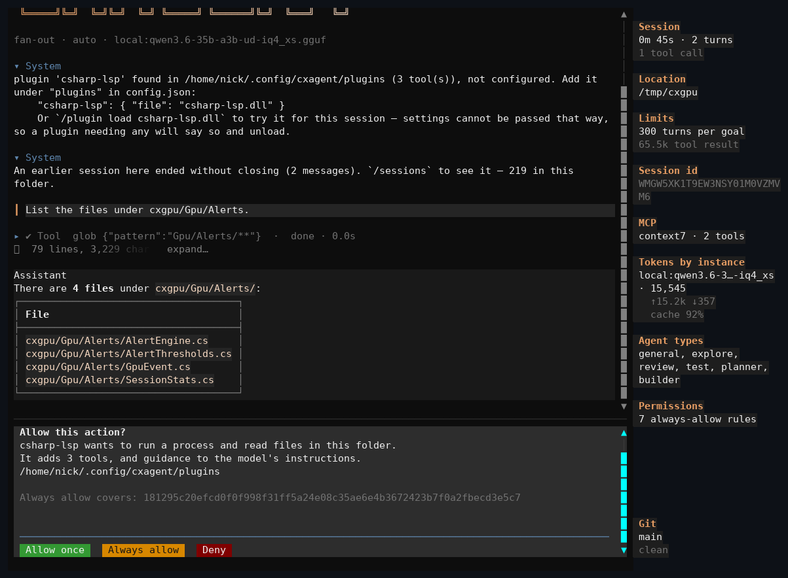
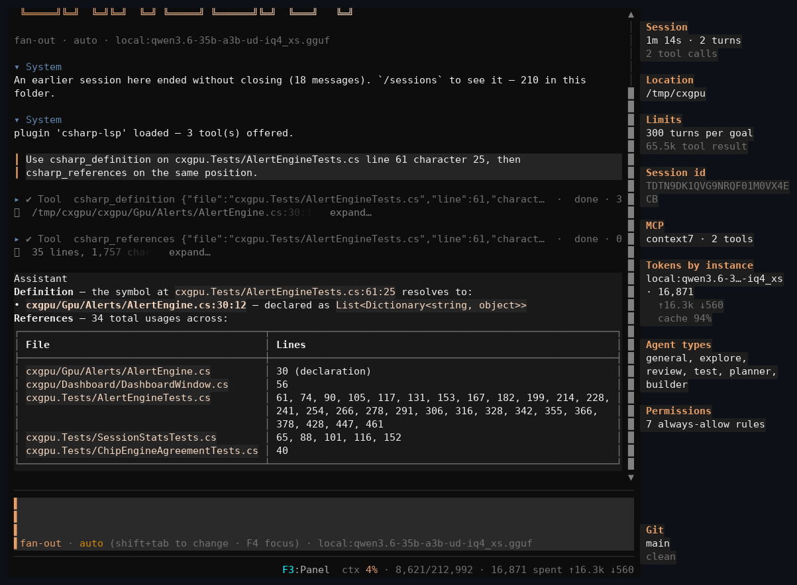

Give it a goal.
It changes the code.
A terminal AI coding agent: it reads your files, works out what to change, and changes them — in one context, with the real bytes in front of it.
curl -fsSL https://raw.githubusercontent.com/nickprotop/cxagent/master/install.sh | bashNo .NET required. Anything outside your working folder asks first. Windows, the .NET tool, building from source →
It runs on your machine, against the model you name. There is no cxagent account and no cxagent server: the only things it talks to are the endpoint in your config, the MCP servers you add, and whatever a tool call reaches for.

What a session looks like
Every capture is from a real session. Nothing is staged, and the mistakes are still in the pictures.
{kind=link}
A session, end to end
Two workers explored a GPU monitoring tool and reported back. The agent wrote the summary you are reading from what they found, not from the files — and the panel on the right carries what that cost while it happened: 1.2M tokens across workers. The system prompt is built the same way every turn, so what the model has already read stays read.
The next capture is this same session, scrolled up.
{kind=link}
The same session, one worker open
Every collapsed worker expands into what it actually did: fifty-two calls across six tools in under four seconds, each with its arguments and its duration. Some are csharp_definition — a plugin's tools, sitting among the built-in ones with nothing to tell them apart.
You are not asked to trust a summary of the work. The work is there.

Trusting a folder
The first question of the first session. Reads and writes inside this folder stop asking; anything that writes elsewhere, and every shell command, still stops.

A worker in its own context
A worker explores with its own turn count and occupancy — the parent stays where it was. The panel splits workers from this agent, because a session that spent most of its tokens inside children would otherwise look identical to one that spawned none.

When the decision is yours
The model gets one call and up to four questions, presented as steps. Every option carries a description saying what it means — a list of bare labels asks you to guess what the model was thinking.

Running what it built
A feature that compiles but was never executed is not finished. Every shell command asks first. Failed calls render red and stay in the transcript — here the agent adapted its own invocation across three failures before the export ran.
Every call a worker made
A finished worker is one row; opened, it shows its own model, the task as it was briefed, its turns and tokens, then every call it made with the time each took and how much came back.

What it actually cost
/stats ranks tools by characters returned rather than call count — a turn re-sends everything before it, so one tool returning 215k characters does not cost that once.

Loading a plugin
A plugin is a DLL cxagent did not ship. The prompt says what it will contribute and covers its approval with a hash of the whole load set — change a byte and the question comes back.

A plugin resolving a reference
csharp_definition resolves a reference in a test project to its declaration in the project under test — across a boundary grep cannot cross. The first call pays to index; everything after is answered from a warm index.
How it works
One context, the real bytes on disk, and a prompt that does not move under a running conversation.
It asks before it reaches out
Reads and writes inside the working folder stop asking. Anything that writes elsewhere, and every shell command, still stops.
Sub-agents keep their own context
A worker gets its own window and its own turn count. The panel counts what workers spent separately from what this agent spent, because a session that did most of its work inside children otherwise looks identical to one that spawned none.
Bring your own model
Ollama, any OpenAI-compatible endpoint, or Anthropic — named in your config file, and switchable mid-session. There is no cxagent service between you and the model.
A plugin is a decision, not an install
A plugin is a DLL you drop in a folder. Before any of it runs, cxagent reads the sidecar file beside it, shows you a hash of everything it would load, and asks.
The prompt does not move
Built the same way every turn, from facts sorted into a fixed order — so an MCP server connecting at turn 82, or a skill the filesystem happened to list differently, does not rewrite what the model has already read.
It comes in several colours
A theme is a startup flag, a config key, or a picker in the status bar —
--theme <name>, and cxagent --help lists what is installed. The
captures above are not all the same one.
Where to go next
Installing, the plugin catalog, the library under the terminal, and the reference rendered from the repository's own markdown.
Read this before you run it
It edits your files. Inside the working folder it writes without asking —
that is the point of it, and it is why you should run it in a git repository with your work
committed. git diff is the review step; there is no undo inside cxagent.
It runs shell commands, and it spends your money. Every turn is a request to whichever provider you configured, and a sub-agent is a whole second run of turns. If you point cxagent at a paid API, you are paying for what it does, including work that turns out to be wrong.
Nobody is responsible for the results but you. cxagent is provided as-is under the MIT licence, with no warranty of any kind. Review the diff. Keep backups. Do not run it against anything you cannot afford to have changed. The full version of this section →